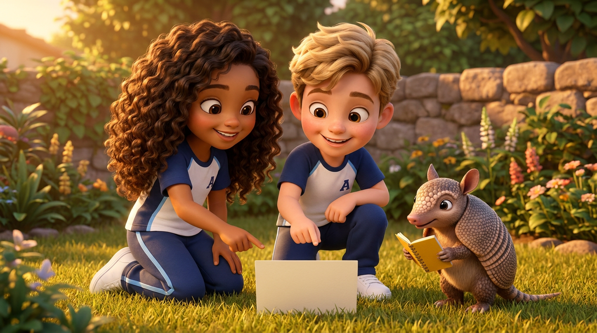
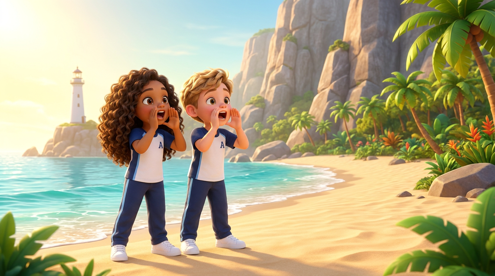
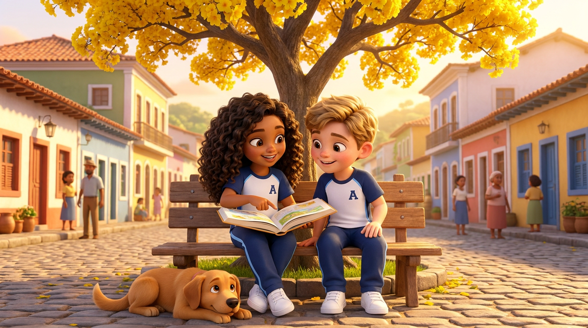
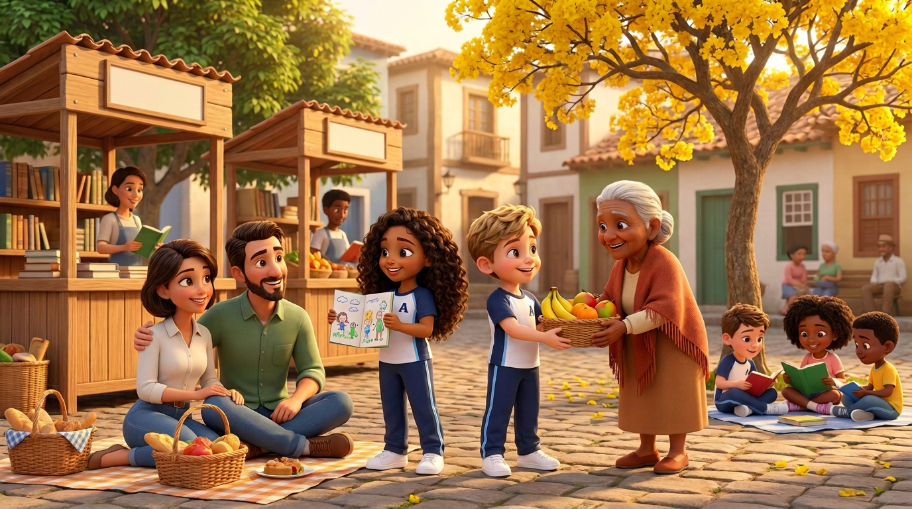
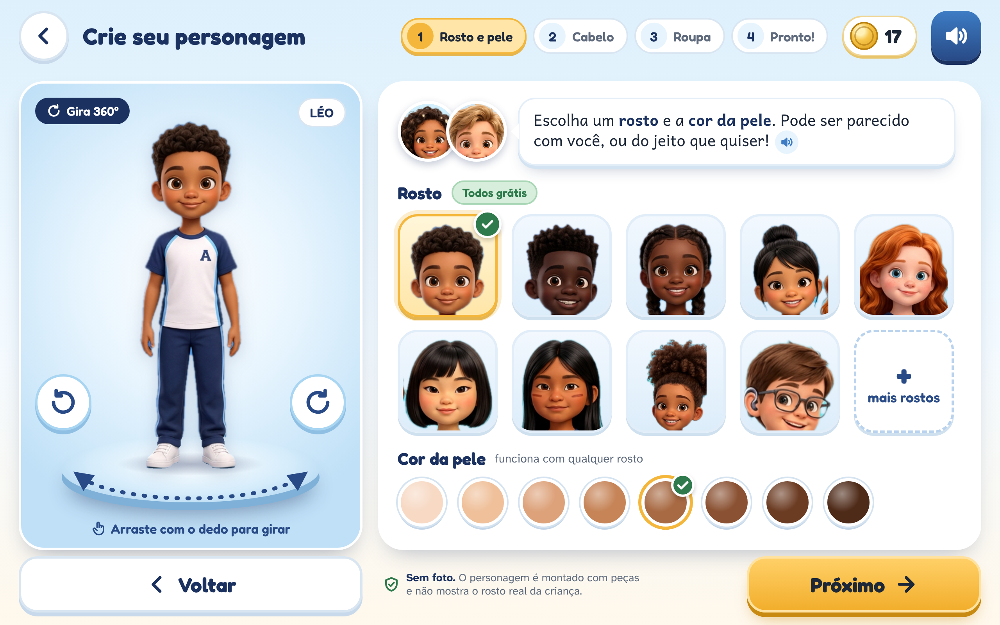
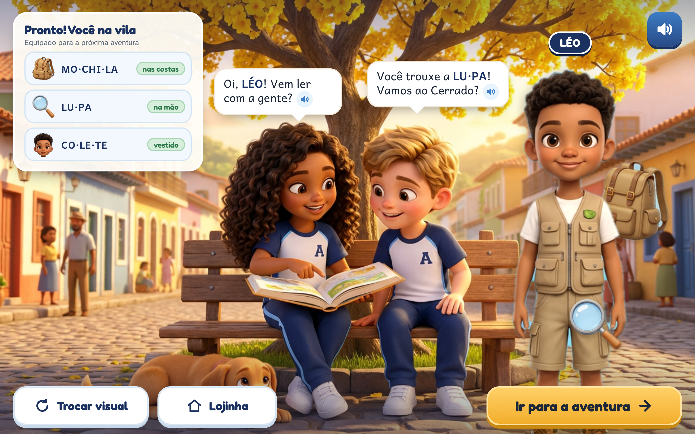
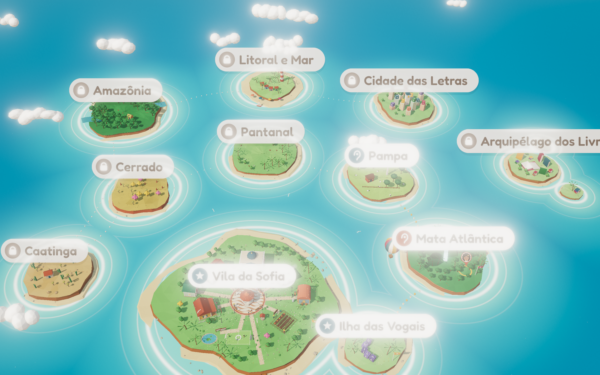
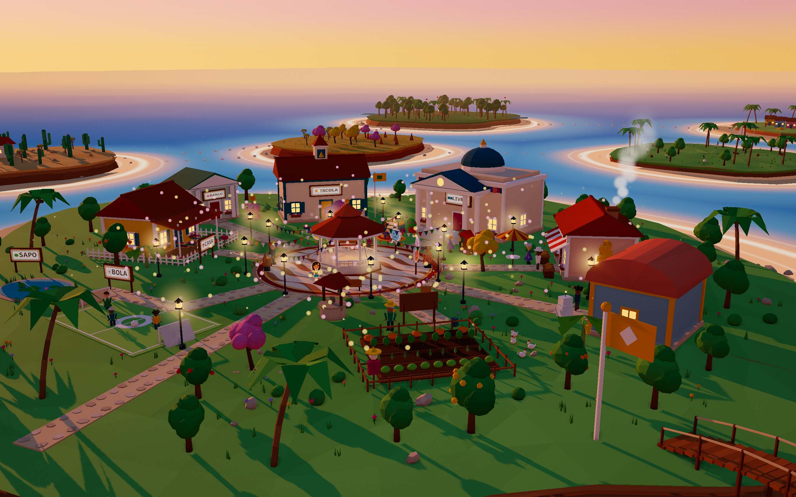

Sofia, Tales e o mundo
Personagens 3D, avatar da criança, a vila e as regiões











Imagens já existentes no repositório (docs/propostas/06-fonema-unificada). "Versão anterior" = tela feita antes de decisões mais novas e ainda a atualizar.